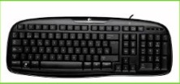
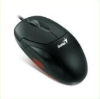
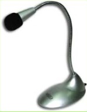
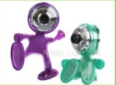

| Teclado: Un teclado se compone de una serie de teclas agrupadas en funciones es un periférico de entrada o dispositivo, en parte inspirado en el teclado de las máquinas de escribir, que utiliza una disposición de botones o teclas, para que actúen como palancas mecánicas o interruptores electrónicos que envían información a la computadora |  |
| Mouse: Dispositivo que mueve un puntero electrónico sobre una pantalla que facilita la interacción usuario-máquina. |  |
| Micrófono: Es un transductor electroacústico (dispositivo que transforma la electricidad en sonido, o viceversa). Su función es la de traducir las vibraciones debidas a la presión acústicaejercida sobre su cápsula por las ondas sonoras en energía eléctrica, lo que permite por ejemplo grabar sonidos de cualquier lugar o elemento. |  |
| WebCam: Es una pequeña cámara digitalconectada a una computadora, la cual puede capturar imágenes y transmitirlas a través de Internet, ya sea a una página web o a otra u otras computadoras de forma privada. |  |